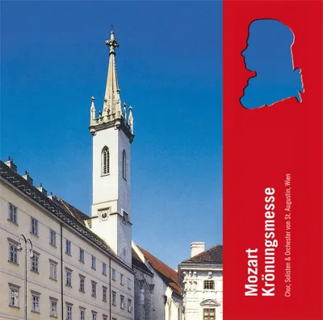

Mozart: Krönungsmesse
Krönungsmesse KV 317, Ave verum KV 626, Sub tuum præsidium KV 198, Confitebor und Beatus vir KV 339, Laudate Dominum F-Dur KV 339; L. Cherubini: O Deus, ego amo te; C. Czerny: Veritas mea
Ana Puche Rosado, Frauke Schäfer, Lorena Espina, Rita-Lucia Schneider, Alexander Kaimbacher, Klemens SanderLeitung: Ottokar Prochazka, Robert Rieder